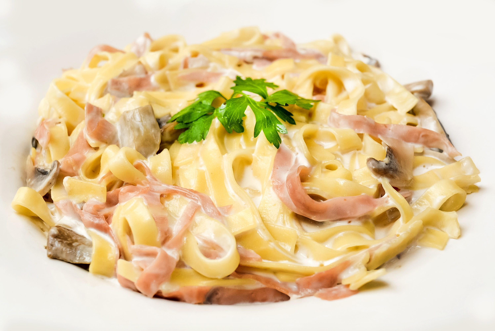

Home
Carbonara

Description
Carbonara is a classic Italian pasta best known for the creaminess of it's sauce and the crunchiness of the meat
Ingredients
- Guanciale
- Egg
- Pepper
- Parmigiano
- Salt
- Spaghetti
Steps
- Cut the guanciale into thick batons.
- Finely grate the parmigiana.
- Whisk together the egg. cheese and pepper in a large bowl.
- Cook the pasta in 4 litres of water with 1 tablespoon of salt.
- Scoop out a cup of pasta cooking water.Then drain the rest.
- Cook guanciale until it's golden.
- Toss the pasta in guanciale and toss it around so it gets coated in the fat.
- Transfer it all into the sauce bowl.
- Add a 1/2 cup of the cooking water into the bowl
- Mix!
- Finally, serve.